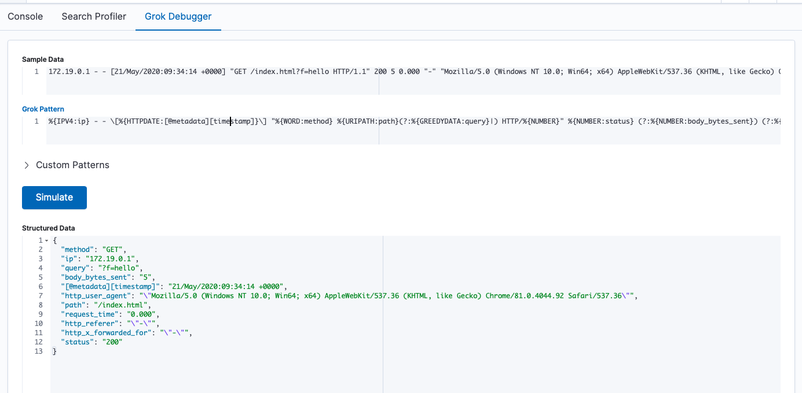

Logstash 处理日志
Logstash 服务配置
在 docker-compose.yaml 对于 Logstash 服务的配置中：
logstash:
build:
context: logstash/
args:
ELK_VERSION: $ELK_VERSION
volumes:
- type: bind
source: ./logstash/config/logstash.yml
target: /usr/share/logstash/config/logstash.yml
read_only: true
- type: bind
source: ./logstash/pipeline
target: /usr/share/logstash/pipeline
read_only: true
ports:
- "9600:9600"
environment:
LS_JAVA_OPTS: "-Xmx256m -Xms256m"
networks:
- elk
depends_on:
- elasticsearch
- 使用 logstash/ 目录下的 Dockerfile 构建镜像
- 数据卷映射：
- 将宿主机目录下的配置文件映射到容器内
- 使用名为 elk 的子网络，这样便可以访问同样使用这个子网络的其他容器
Logstash Pipeline 配置
在 logstash/pipeline/nginx.conf 配置：
### INPUTS
input {
kafka {
codec => "json"
topics_pattern => "elk-nginx-log"
bootstrap_servers => "kafka:9092"
auto_offset_reset => "latest"
group_id => "nginx-log"
}
}
### FILTERS
filter {
grok {
#获取 Nginx 日志字段
match => {
"message" => [
#Nginx access log 格式
# 172.19.0.1 - - [21/May/2020:09:34:14 +0000] "GET /index.html?f=hello HTTP/1.1" 200 5 0.000 "-" "Mozilla/5.0 (Windows NT 10.0; Win64; x64) AppleWebKit/537.36 (KHTML, like Gecko) Chrome/81.0.4044.92 Safari/537.36" "-"
'%{IPV4:ip} - - \[%{HTTPDATE:[@metadata][timestamp]}\] "%{WORD:method} %{URIPATH:path}(?:%{GREEDYDATA:query}|) HTTP/%{NUMBER}" %{NUMBER:status} (?:%{NUMBER:body_bytes_sent}) (?:%{NUMBER:request_time}) %{QS:http_referer} %{QS:http_user_agent} %{QS:http_x_forwarded_for}'
]
}
remove_field => ["message"]
}
if [path] {
# 过滤日志
if [path] =~ /\.js|css|jpeg|jpg|png|gif|ico|swf|svg$/ {
drop {}
}
#获取 日志 时间
date {
match => [ "[@metadata][timestamp]", "dd/MMM/yyyy:HH:mm:ss Z" ]
remove_field => ["input_type", "offset", "tags", "beat" ]
}
mutate {
#转换数据类型
convert => [
"status" , "integer",
"body_bytes_sent" , "integer",
"request_time", "float"
]
}
if [query] {
kv {
prefix => "p_"
source => "query"
field_split => "&?"
#只存储感兴趣参数
#include_keys => [ "uid", "vn" ]
remove_field => ["query" ]
}
#url 解码
urldecode {
all_fields => true
}
}
}
}
### OUTPUTS
output {
elasticsearch {
hosts => "elasticsearch:9200"
index => "logstash-%{[fields][topic]}-%{+YYYY.MM.dd.HH}"
}
}
Logstash pipeline 配置主要分为 3 个部分： input/filter/output
对于 input 模块：
- 配置数据来源，这里是从 Kafka 获取日志
- 更多来源配置，参见 https://www.elastic.co/guide/en/logstash/current/input-plugins.html
对于 filter 模块：
- 配置数据过滤或格式化规则，这里主要使用
grok和kv匹配日志字段和解析请求参数 - 更多过滤器配置，参见 https://www.elastic.co/guide/en/logstash/current/filter-plugins.html
对于 output 模块：
- 配置格式化后的数据输出目标，这里将日志输出到 Elasticsearch
- 更多输出配置，参见 https://www.elastic.co/guide/en/logstash/current/output-plugins.html
关于 Grok
Grok 是正则匹配工具，更多正则模式请参考 https://grokdebug.herokuapp.com/patterns#
